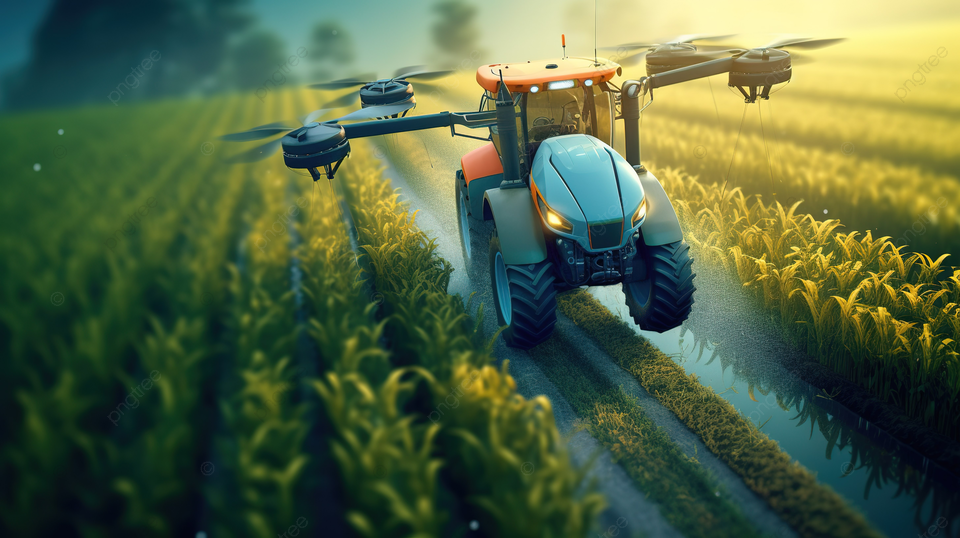

"Stay ahead with the latest in agricultural technology. Explore cutting-edge innovations and updates. Empower your farming practices for greater efficiency and sustainability. Click to discover the future of agriculture!"

Farmers no longer have to apply water, fertilizers, and pesticides uniformly across entire fields. Instead, they can use the minimum quantities required and target very specific areas, or even treat individual plants differently. Benefits include:
Higher crop productivity
Decreased use of water, fertilizer, and pesticides, which in turn keeps food prices down
Reduced impact on natural ecosystems
Less runoff of chemicals into rivers and groundwater
Increased worker safety
In addition, robotic technologies enable more reliable monitoring and management of natural resources, such as air and water quality.
It also gives producers greater control over plant and animal production, processing, distribution, and storage, which results in:
Greater efficiencies and lower prices
Safer growing conditions and safer foods
Reduced environmental and ecological impact
Improved crop health through reduced exposure to harmful pathogens
More accurate weather forecasts for farmers
Better management of the timing of planting, sowing, weeding, harvesting, etc., leading to more consistent yields